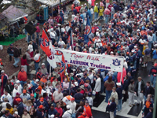
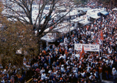
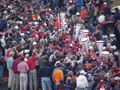

|

Tiger Walk
Tiger Walk
 An Auburn tradition which began in the early 1960's when Auburn players would walk from the athletic dorms to the football stadium and fans would line the streets to wish them well. The largest Tiger Walk is believed to have taken place prior to the 1989 Alabama game when morethan 20,000 fans lined the streets.


|
© 2000 Auburn Network, Inc |
Last updated Friday, 10-Dec-1999 11:33:29 CST